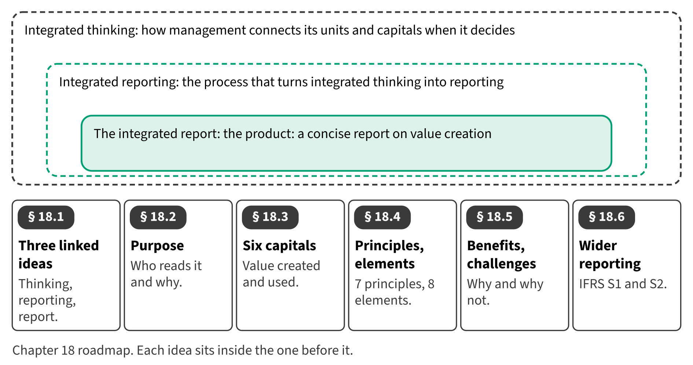

Part I · Foundations and the four financial statements · Chapter 18
Integrated Reporting
إعداد التقارير المتكاملة
Financial statements show Orontes's money: assets, profit and cash. But Orontes also depends on things the balance sheet does not show: the skills of its staff, its relationships with olive farmers, its recipes and the water in its groves. Integrated reporting explains how a company uses and affects all of these to create value.

Start here
Then
What this chapter is tested on
| LOS | Official statement (ICMA, 2024) | In plain words | Depth here |
|---|---|---|---|
| A.1.l | define integrated reporting, integrated thinking, and the integrated report, and demonstrate an understanding of the relationship among them | Define integrated reporting, integrated thinking and the integrated report, and explain how they relate. | Full treatment |
| A.1.m | identify the primary purpose of integrated reporting | Identify the primary purpose of integrated reporting. | Full treatment |
| A.1.n | explain the fundamental concepts of value creation, the six capitals, and the value creation process | Explain value creation, the six capitals and the value creation process. | Full treatment |
| A.1.o | identify elements of an integrated report (i.e., organizational overview and external environment, governance, business model, risks and opportunities, strategy and resource allocation, performance, outlook, and basis of preparation and presentation) | Identify the content elements of an integrated report. | Full treatment |
| A.1.p | identify and explain the benefits and challenges of adopting integrated reporting | Identify and explain the benefits and challenges of integrated reporting. | Full treatment |
The official statements are quoted from the ICMA Learning Outcome Statements (effective September 1, 2024). The plain-words column restates them in simpler English. The exam may test any outcome up to Level C.
What you already know
Many MENA companies publish sustainability or ESG reports, and some now apply IFRS S1 and S2. An integrated report is different: it connects financial and non-financial information in one concise story of value creation. Section 18.6 explains the relationship.
The 8 key terms
Every scene has Check Answers and Try Again. Try Again reshuffles rather than revealing. When you are wrong, the first thing you read is the reason for the option you chose, taken from the book's own explanations. Progress is saved in this browser.